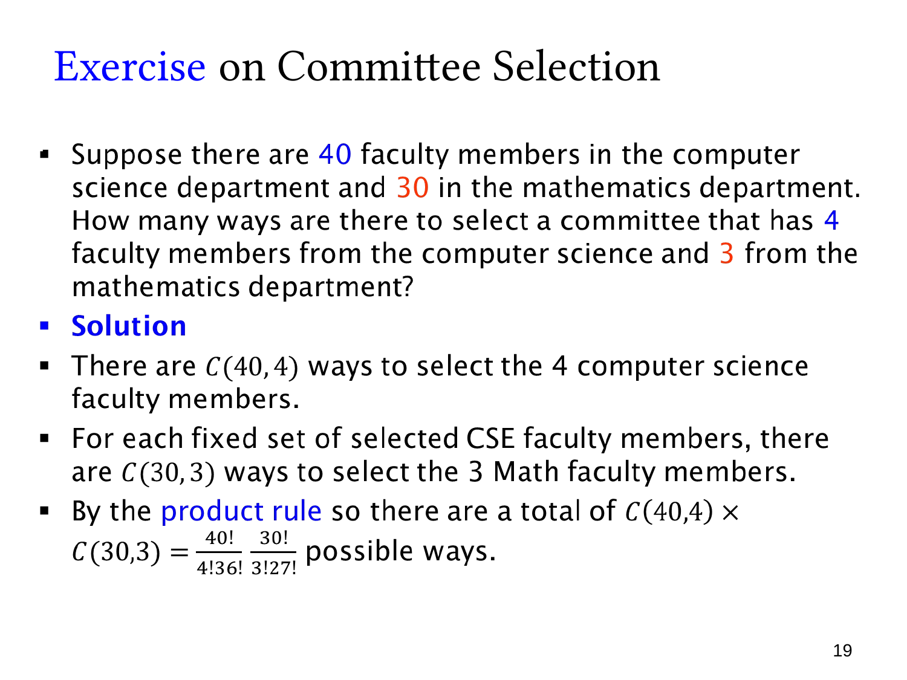

L1.6 · 第 19 页讲解原文
查看这一页课件

按部门人数选委员会
计算机系有 40 名教师，数学系有 30 名教师，委员会要求恰好包含 4 名计算机系教师和 3 名数学系教师。按课件模型，两系候选人是不同的人员组，委员会不区分职务。
先从计算机系选 4 人，有 C(40,4) 种。每组选定后，都可以从数学系选 3 人，有 C(30,3) 种。两部分都需要完成，因此用乘法法则：
C(40,4)C(30,3)=4!36!40!3!27!30!.
每个委员会都能唯一拆出“计算机系的四人”和“数学系的三人”，因此这个构造没有重复。部门内不记录选择顺序，所以使用组合而非排列。
不能直接用 C(70,7)，因为它还会包含 7 人全来自同系或其他不符合 4∶3 要求的比例。也不应把两个组合数相加：加法对应从两类方案中择其一，这里要同时选齐两个部门的人。